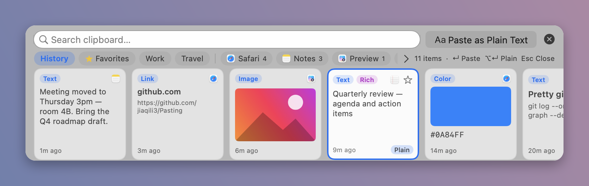
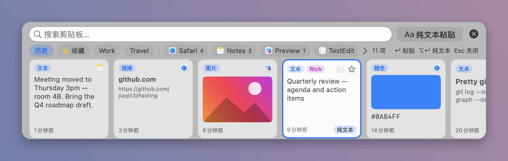
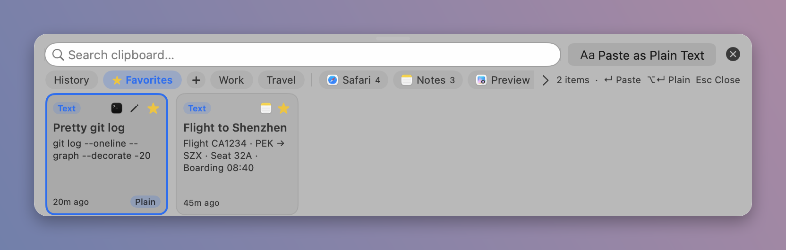
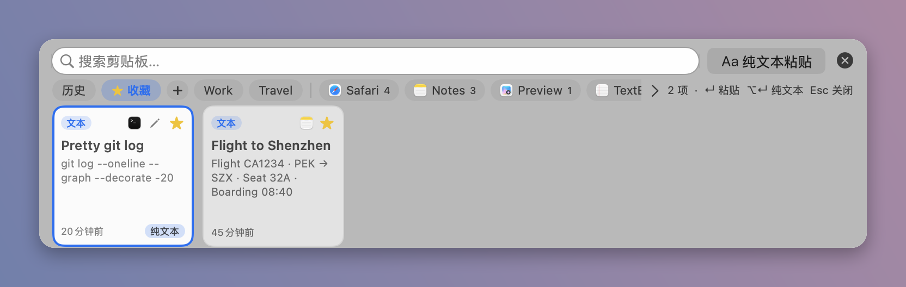
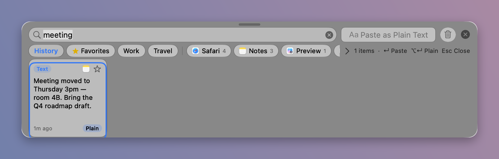
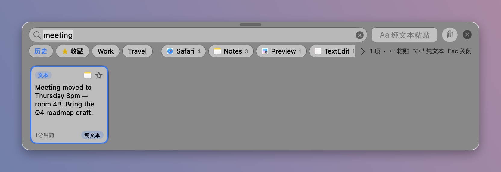
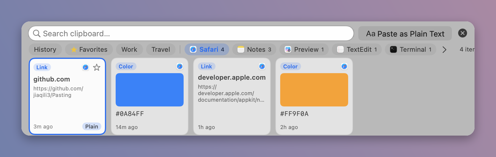
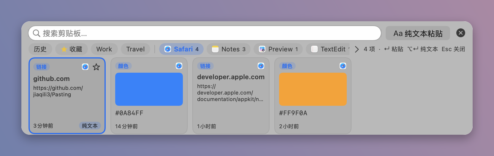
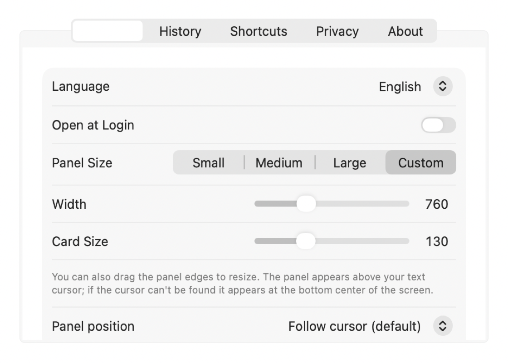
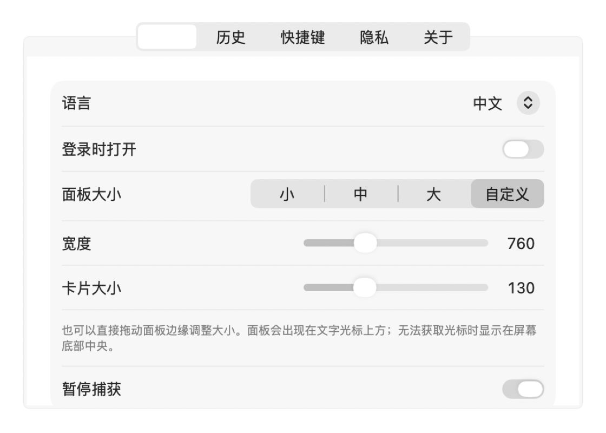

Pasting is a fast, private, local-only clipboard manager for macOS. Press ⇧⌘V to browse cards, search, filter, and paste — with or without formatting. No account, no cloud, no network.
Pasting 是一款快速、私密、纯本地的 macOS 剪贴板管理器。 按 ⇧⌘V 即可浏览卡片、搜索、筛选并粘贴（支持纯文本）。 无需账号、无云同步、无联网。


Appears above your text cursor. ←/→ select, ↵ paste, ⌥↵ plain text, Space for Quick Look.
出现在文字光标上方。←/→ 选择，↵ 粘贴，⌥↵ 纯文本，空格快速预览。
Everything stays in Application Support. Password-manager items are skipped.
数据只保存在 Application Support。密码管理器内容会自动跳过。
Star clips that never expire. Organize with pinboards and filter by app or images.
星标条目永不过期。可用分类整理，并按应用或图片筛选。
Copy an SSH command and a password nearby — Pasting merges them into one line, puts it on the clipboard, and shows a Suggested card at the top.
先后复制 SSH 命令和密码时，自动合并成一行并写入剪贴板，顶部同时出现「建议」卡片，直接 ⌘V 即可。








Pasting-*.zip from Releases.Pasting.app to ~/Applications or /Applications.Pasting-*.zip。Pasting.app 放到 ~/Applications 或 /Applications。